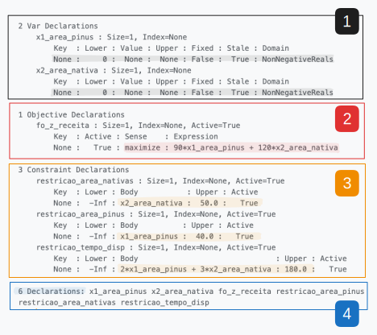

Esse texto não tem como pretensão ensinar uma linguagem de programação do zero, tão pouco conceitos básicos de Pesquisa Operacional. A proposta aqui é ser o mais didático possível dentro do universo da PO usando a biblioteca Pyomo do Python, principalmente aplicado às Ciências Florestais, aproveitando todas as possibilidades que o Quarto permite na construção de documentos para auxiliar no entendimento do texto.
A ideia surgiu após a constatação de que atualmente não temos nem de perto a quantidade de material sobre Pyomo em Português se compararmos com o idioma dominante na ciência: Inglês. Considerando que pra muitos essa pode ser uma barreira inicial que só tornará a experiência mais difícil, espero que esse material possa agregar na jornada de aprendizado de quem busca entender sobre o assunto. Além disso, o desafio de escrever com minhas palavras na era da inteligência artificial me pareceu extremamente interessante.
Pensando em conectar com minha área de atuação, o problema aqui exposto foi extraído da excelente apostila Programação Linear para Fins Florestais, do professor Julio Eduardo Arce (UFPR). O capítulo que descreve o problema do Poeta pode ser acessado no seguinte link: capítulo. Recomendo a leitura, principalmente para aqueles que não tem familiaridade com o tema. Nesse documento o problema será resolvido de maneira simplificada, alocando cada valor e restrição diretamente no código, sem pensar em escalonamento dos dados ou formulação genérica, visando descomplicar alguns conceitos.
Em relação à biblioteca do Pyomo, as práticas utilizadas nesse projeto usam como fonte as boas práticas descritas no livro Hands-On Mathematical Optimization with Python. Considero esse um dos melhores materias gratuitos disponíveis sobre o tema (infelizmente apenas em inglês).
De resto, agradeço aos meus colegas e amigos que revisaram o texto, me ajudando com dicas úteis sobre onde detalhar ou sobre onde simplificar algumas coisas.
Aos leitores: sim, esse é um problema simples, e a ideia é justamente focar em como resolver ele usando uma ferramenta poderosa como o Pyomo, porque uma vez compreendido as noções básicas, os problemas resolvidos em Python podem crescer muito além do que um Excel conseguiria resolver. Então, algumas repetições serão propositais visando a consolidação do conhecimento.
Espero que aproveitem.
2 Descrição do problema
Um poeta possui 40 ha de Pinus e 50 ha de floresta nativa. Nos últimos 10 anos, o manejo do Pinus gerou R$ 36.000 com 800 dias de trabalho, e o manejo da floresta nativa gerou R$ 60.000 com 1.500 dias de trabalho.
Ele quer maximizar a receita anual, mas pode dedicar no máximo 180 dias/ano ao manejo. Determine quantos hectares de cada floresta ele deve manejar por ano para obter a maior receita possível, respeitando os limites de área disponíveis.
Esse é um enunciado simplificado do problema. A versão original pode ser consultada nos documentos do projeto.
3 Resumo dos dados
Todos os valores foram convertidos para a base hectare por ano (ha·ano), facilitando a formulação do modelo de programação linear.
Floresta
Área disponível (ha)
Receita (R$/ha·ano)
Dias de manejo (dias/ha·ano)
Pinus
40
90
2
Nativa
50
120
3
Recurso total disponível:
Tempo máximo de manejo: 180 dias/ano
4 Formulação
4.1 Índices/Conjuntos
NoteNão iremos utilizar essa seção nesse documento visando a simplificação. Será abordada no modelo com escabilidade
4.2 Parâmetros
NoteNão iremos utilizar essa seção nesse documento visando a simplificação. Será abordada no modelo com escabilidade
4.3 Variáveis de decisão
Como a maximização da receita do Poeta está diretamente ligada ao preço recebido por floresta e à quantidade de hectares manejados, o item que pode ser alterado pensando no cenário ótimo, é a área a ser manejada para cada floresta. Sendo assim, as variáveis de decisão serão:
\[
\begin{aligned}
x_1 &:\ \text{número de hectares de floresta de pinus a serem manejados} \\
x_2 &:\ \text{número de hectares de florestas nativas a serem manejadas}
\end{aligned}
\]
4.4 Função objetivo
Tendo como guia a maximização da receita anual (aqui chamaremos de Z), teremos que usar as receitas anualizadas para cada tipo de floresta (calculadas no tópico Resumo dos dados”). Assim, têm-se:
\[
\max z = 90x_1 + 120x_2
\]
4.5 Restrições
Devemos começar com a limitação de área para floresta, não temos como manejar mais hectares do que o disponível: \[
\begin{aligned}
x_1 &\leq 40 \quad \text{(ha de floresta de pinus)} \\
x_2 &\leq 50 \quad \text{(ha de floresta nativa)}
\end{aligned}
\]
Após, precisamos checar no enunciado que há uma restrição de tempo máximo de trabalho por ano. Como calculamos o tempo gasto para cada floresta no tópico de resumo de dados, podemos chegar na seguinte expressão matemática para representar a relação entre tempo de manejo x tempo máximo do poeta: \[
2x_1 + 3x_2 \leq 180
\]
Para finalizar, devemos definir uma restrição que impeça o modelo de manejar áreas negativas:
# dicionário de receita por tipo de floresta1receita = {"pinus": 90, "nativa": 120}# dicionário de área máxima por tipo de floresta2area_max = {"pinus": 40, "nativa": 50}# dicionário para limitar os recursos, no caso, o tempo de dias do poeta3recurso_max = {"tempo": 180}# dicionário para controle do tempo gasto de manejo por floresta no ano4tempo_por_manejo = {"pinus": 2, "nativa": 3}
1
No Python, temos diversas maneiras de importar e trabalhar com os dados. Para facilitar nosso trabalho com a biblioteca de otimização (pyomo), iremos usar uma forma de dados essencial do Python: o dicionário. Aqui, o que estamos fazendo é basicamente uma lista que relaciona uma chave (key) x uma informação. A chave pinus irá trazer o valor 90, por exemplo. Podemos acessar ela com o código receita['pinus']
2
Na área máxima, a ideia é a mesma, a key (chave) pinus irá trazer o valor 40, ou seja, 40 hectares é a área máxima da floresta de pinus.
3
Para o recurso, a keytempo irá trazer o valor referente aos 180 dias.
4
Nosso último dicionário segue a mesma estrutura dos anteriores. Com o código tempo_por_manejo['pinus'] acessamos o valor de 2 dias por hectare/ano, e usando a chave nativa, obtemos os 3 dias por hectare/ano.
Os blocos de código nesse artigo irão possuir itens numerados explicando detalhamente as etapas realizadas. Esse é uma das vantagens de escrever esse documento em Quarto.
5.2 Importar bibliotecas
# instalar a biblioteca# pip install pyomo# importar biblioteca1import pyomo.environ as pyo
1
A biblioteca de otimização que iremos usar é o Pyomo. Usamos um “alias” para importar todos os módulos da biblioteca, assim podemos acessar as funções e métodos diretamente chamando pyo. Por exemplo, chamamos pyo.ConcreteModel() para criar um modelo em branco.
5.3 Importar e definir solver
Iremos precisar definir um Solver para resolver o problema. O solver pode ser instalado via terminal ou pode ser acessado por um executável. O Solver escolhido é o HIGHS - open source e muito eficiente. Contudo, poderia ser qualquer outro, seja gratuito (gplk, cbc) ou uma versão comercial (gurobi , cplex).
O código abaixo deixa um exemplo para o caso onde usamos o executável de um solver, usando o CBC como referência.
# instalação do solver# pip install pyomo highspy1nome_solver ="appsi_highs"2SOLVER = pyo.SolverFactory(nome_solver)3assert SOLVER.available(), f"Solver {nome_solver} is not available"
1
Definimos o nome estrutural do solver dentro do python (aqui usamos o ‘appsi_highs’ pois ele possui uma interface mais atual, contudo, poderiamos usar o nome ‘highs’)
2
Estabelecemos para o pyomo que o solver utilizado será o que salvamos na variável nome_solver
3
Fazemos uma validação para entender se o solver está disponível no nosso sistema
# o executável existe dentro da pasta do projeto1caminho_do_executavel ="solvers/cbc.exe"SOLVER = pyo.SolverFactory(2 _name="cbc",3 executable=caminho_do_executavel)assert SOLVER.available(), f"Solver {nome_solver} is not available"
1
Definimos o caminho do executável do solver em uma variável
2
Estabelecemos o nome do solver no argumento _name, igual ao método de importação direta
3
A diferença acontece no argumento executable, que recebe a variável que contém o caminho do solver.
Antes de iniciar a declaração das informações do modelo, primeiro precisamos criar a “caixa” que vai receber todas as informações, nosso modelo propriamente dito. Para isso, usamos a função ConcreteModel da biblioteca Pyomo. A partir de agora, cada informação que queremos adicionar no modelo, será referenciada usando o nome “modelo”, que foi o que usamos para o objeto que recebeu o resultado da função.
5.5 Índices
NoteNão iremos utilizar essa seção nesse documento visando a simplificação. Será abordada no modelo com escabilidade
5.6 Parâmetros
NoteNão iremos utilizar essa seção nesse documento visando a simplificação. Será abordada no modelo com escabilidade
Para definição das variáveis de decisão, usamos a função Var. Perceba que aqui já estamos adicionando informações dentro do nosso objeto modelo criado na etapa anterior. Por questões didáticas, vamos chamar a variável \(x_1\) de “x1_area_pinus”, mas ela poderia ter qualquer outro nome, como apenas “x1”.
2
A variável \(x_2\) segue a mesma lógica e padrão. A diferença aqui é que demos outro nome para ela, assim criando duas variáveis de decisão dentro do modelo.
3
Para ambas, utilizamos o argumento domain para definir que as variáveis são do domínio de valores reais não negativos. Ou seja, podemos ter valores quebrados de área como solução do modelo, pois é possível manejar 30.5 hectares, por exemplo. Mas não é possível manejar uma área negativa. Temos outras opções para esse argumento, como Binary, para variáveis de decisão que podem ser apenas 0 ou 1, todavia, essa opção não faz sentido aqui.
Para esse caso, não precisaríamos criar restrições específicas para a área máxima das florestas, visto que na definição das variáveis já estabeleceríamos um limite para o quanto essa área de manejo pode atingir.
Não seguiremos com essa opção para poder reforçar a construção das restrições.
A principal diferença para a opção 1 é que agora usamos o argumento bounds, onde definimos que o menor valor possível para essa variável é 0, e o maior valor é o número contido no dicionário area_max['pinus'], 40 hectares. Com isso automaticamente já restringimos o máximo que a variável \(x_1\) pode alcançar, e qual o domínio dela.
2
A lógica é igual: não posso manejar áreas menores que 0, e não posso manejar mais que 50 ha de floresta nativa (resultado do dicionário area_max['nativa'])
5.8 Declarar função objetivo
A partir desse tópico, irei demonstrar duas opções para declaração das funções (objetivo e restrições):
Uma segue o método comum já estabelecido em exemplos de Pyomo internet à fora
A outra segue uma declaração mais atual disponível nas útlimas versões da biblioteca, seguindo a linha do uso de Python decorators.
O resultado dentro do modelo é o mesmo, cada uma tem suas vantagens e desvantagens, sendo a última uma recomendação do livro mencionado na introdução, e, particularmente, uma maneira mais visual de construir e controlar o código conforme o modelo cresce.
A função objetivo no Pyomo é definida pela função Objective, que pode receber uma function em python ou a expressão direta que representa nosso objetivo (\(90x_1 + 120x_2\))
2
Aqui estamos representando o primeiro argumento ( \(90x_1\) ), acessando o valor de 90 R$/ha/ano com o código receita['pinus'], e multiplicando pela variável \(x_1\), acessando a variável de decisão do modelo com modelo.x1_area_pinus
3
Repetimos a mesma estrutura agora para a receita da nativa, acessando o dicionário receita['nativa'] temos os 120 R$/ha/ano, e multiplicando pela variável modelo.x2_area_nativa, temos nossa segunda parte da função objetivo: \(120x_2\)
4
Finalizamos informando o Pyomo de qual direção de otimização (argumento sense) queremos seguir, nesse caso queremos maximizar nossa receita, para isso usamos o método pyo.maximize
Para usar o decorator, utilizamos o “@” + a função que queremos usar, nesse caso, a Objective do objeto modelo, aqui informamos apenas os argumentos que não fazem parte da expressão matemática, como o método de otimização (maximização). Detalhe que a chamada modelo.receita_total = pyo.Objective, é exatamente igual ao @modelo.Objective() def receita_total(m): em termos práticos
2
A diferença primordial é que aqui construímos funções Python, declaradas como def, para representar nossa regra matemática. A função vai se chamar receita_total, igual ao nome que demos na opção 1, e ela vai ter como argumento um modelo que será tratado como m, dentro do contexto de função, que inicia logo após o :
3
Primeiro criamos uma variável receita_pinus, que recebe o valor do dicionário já explicado na opção 1, multiplicado pela variável de decisão \(x_1\) do nosso modelo m. Dentro do contexto da função, o modelo será representado pela variável m, criada no argumento do def
4
Repetimos a mesma lógica da etapa anterior para a variável receita_nativa
5
E agora usamos a função return para controlar a devolução da nossa função customizada, que será simplesmente a soma das duas receitas: \(90x_1 + 120x_2\)
Usamos a função Constraint para declarar restrições do nosso modelo. Ou seja, acessamos ela do alias pyo, e salvamos em uma restrição chamada restricao_area_pinus, que será criada dentro do objeto modelo
2
O argumento da função é apenas a conversão em Python da expressão matemática \(x_1 \leq 40\), onde acessamos a variável x1_area_pinus do nosso modelo, e buscamos o valor de 40 hectares diretamente do dicionário area_max, com a key pinus
Estabelecendo o uso do decorator com @modeloe definindo a função do Pyomo que iremos utilizar. Aqui não há necessidade de nenhum argumento adicional pois o único que iremos usar (expr) já consta no corpo da função def
2
Criação de uma função python com o nome da nossa restrição que recebe como input um modelo, aqui chamado como `m`
3
A função retorna uma equação que representa a nossa regra estabelecida para essa restrição: primeiro acessa a variável x1_area_pinusdo nosso modelo m, depois faz a lógica da regra de menor ou igual ao nosso valor existente na key pinus do nosso dicionário area_max
Seguindo a lógica da restrição anterior, aqui criamos um novo item chamado restricao_area_nativas.
2
Para escrever a restrição, a única coisa que precisamos mudar em relação à primeira, é a variável de decisão desejada e o item que queremos do dicionário: modelo.x2_area_nativa e area_max['nativa'], respectivamente. Esse último sendo a forma que optamos para representar o valor de 50 hectares de limite para a floresta nativa.
Estabecendo o uso do decorator com @modeloe definindo a função do Pyomo que iremos utilizar
2
Criação de uma função python com o nome da nossa restrição que recebe como input um modelo `m`
3
A função retorna uma equação que representa a nossa regra estabelecida para essa restrição: primeiro acessa a variável x2_area_nativado nosso modelo m, depois faz a lógica da regra de menor ou igual ao nosso valor existente na key nativa do nosso dicionário area_max
Primeiro criamos o item restricao_tempo_disp dentro do modelo
2
Dentro da função, iremos representar a primeira parte da equação: \(2x_1 + 3x_2 \leq 180\). O código tempo_por_manejo['pinus'] obtém o valor 2, e a operação de multiplicação com modelo.x1_area_pinus, fecha a expressão \(2x_1\)
3
Agora representamos o \(3x_2\), com o código tempo_por_manejo['nativa'] obtemos o valor 3, e para representar a variável de decisão \(x_2\), usamos modelo.x2_area_nativa
4
Finalizamos a equação usando o mesmo sinal da matemática - o símbolo de menor ou igual - e acessamos o valor de 180 dias diretamente do dicionário recurso_max usando a key'tempo'
Criamos uma função python com o mesmo argumento (recebe um modelo como input)
3
Para facilitar a leitura, seguimos a estrutura de código semelhante à função objetivo: primeiro criamos variáveis auxiliares e depois usamos elas na regra final. A variável tempo_pinus representa o \(2x_1\)
4
Criamos uma variável auxiliar chamada tempo_nativa que representa diretamente a expressão matemática \(3x_2\)
5
Agora usando as duas variáveis auxiliares, escrevemos de maneira clara e concisa na linguagem Python a expressão \(2x_1 + 3x_2 \leq 180\)
5.10 Resolver modelo
# dando uma olhada na construção do modelo1modelo.pprint()
1
Para esse comando em específico, tomei a liberdade de editar uma imagem para tornar mais didática a saída do console. Precisamos entender que essa função permite ver todas as informações contidas no nosso objeto modelo, e que isso só é possível por se tratar de um modelo extremamente pequeno e controlado, uma situação real em produção tornaria inviável a leitura desse output.

Variáveis de decisão declaradas dentro do modelo: \(x_1\) e \(x_2\). Aqui elas ainda não possuem nenhum valor, pois cabe ao modelo decidir quais valores elas terão. Também podemos checar que cada variável está apontando para seu domínio númerico: valores reais não negativos (NonNegativeReals)
Função objetivo, com o método de otimização e a função em si, que é a mesma que definimos com a função Objective
Cada restrição e seus respectivos valores, nesse caso, três restrições. Também podemos notar que todas estão ativas (Actives), pois toda restrição tem por padrão esse status depois de criada. Poderíamos desativar alguma das restrições caso fosse interessante fazê-lo, usando o comando: modelo.restricao.deactivate() , um exemplo é a desativação do tempo máximo: modelo.restricao_tempo_disp.deactivate()
Quantidade total de declações realizadas dentro da instância do modelo.
# usando o solver para resolver o modelo1resultado = SOLVER.solve(2 modelo,3 tee=True)
1
Usando o objeto SOLVER, chamamos a função solve para resolver o problema. E salvamos o resultado em um objeto chamado resultado
2
O primeiro e único argumento obrigatório é o modelo que construímos
3
O tee é um argumento opcional para vermos a progressão do solver solucionando o problema no console do Python
5.11 Exportar resultados
Para acessar resultados brutos do modelo, usamos o método write, contudo, essa opção não é muito amigável em termos de praticidade.
resultado.write
<bound method SolverResults.write of {'Problem': [{'Lower bound': 7600.0, 'Upper bound': 7600.0, 'Number of objectives': 1, 'Number of constraints': 0, 'Number of variables': 0, 'Sense': 'maximize'}], 'Solver': [{'Status': 'ok', 'Termination condition': 'optimal', 'Termination message': 'TerminationCondition.optimal'}], 'Solution': [OrderedDict({'number of solutions': 0, 'number of solutions displayed': 0})]}>
6 Resultado
Para acessar de maneira mais direta alguns resultados do modelo, iremos usar métodos específicos para buscarmos os resultados desejados. Combinando isso com a função print, conseguimos gerar um mini-relatório para consumir o resultado da otimização.
# resultados organizados1print("\n===== RESULTADOS DO MODELO =====")2print(f"Status da otimização: {resultado.solver.status}")3print(f"Condição de término: {resultado.solver.termination_condition}")4print(f"Receita máxima (z) = R${pyo.value(modelo.receita_total):.2f}")5print(f"Área manejada de Pinus (x1) = {modelo.x1_area_pinus.value:.2f} hectares")6print(f"Área manejada de Nativa (x2) = {modelo.x2_area_nativa.value:.2f} hectares")
1
Printar no console o texto presente entre as aspas
2
O texto que segue logo após a função f é um suporte visual para identificarmos a informação. O que realmente estamos acessado do modelo é o que constra entre as chaves {}. Nessa primeira opção, estamos apenas pegando o status do modelo. O que está entre chaves irá rodar como código normalmente, mas o resultado será adicionado ao texto dentro do print, formando uma sentença textual
3
Aqui o código resultado.solver.termination_condition nos retorna a condição de término do modelo (solução ótima)
4
A partir desse item, extraímos diretamente os resultados da otimização,buscando diretamente os valores respectivos aos itens que criamos no modelo: ao acessar modelo.receita_total dentro da função pyo.Value, obtemos o resultado final da função objetivo. Então usamos o operador :.2f apenas para formatar os valores com as casas decimais desejadas
5
Para as variáveis, optei por usarmos outra forma de buscar o valor, usando diretamente o método .value na variável desejada. Com o código modelo.x1_area_pinus.value , temos a área que o modelo decidiu manejar de pinus para alcançar a receita ótima.
6
Finalizamos com a mesma estrutura para a variável \(x_2\), acessando a área de nativa manejada, e logo após formando as casa decimais.
===== RESULTADOS DO MODELO =====
Status da otimização: ok
Condição de término: optimal
Receita máxima (z) = R$7600.00
Área manejada de Pinus (x1) = 40.00 hectares
Área manejada de Nativa (x2) = 33.33 hectares
7 Conclusão
Esse é um post com objetivo didático, então me permiti algumas repetições funcionais. A ideia é publicar novos textos com variações do modelo, estabelecendo algumas práticas de escabilidade e resolvendo outros exercícios didáticos da apostila utilizada como referência. Nesse processo, meu desejo é estabelcer parcerias na escrita e na produção dos textos com grandes amigos e colegas.
Fico à disposição para sugestões de melhorias, afinal, sempre vai haver alguma forma diferente de resolver o mesmo problema. A diversão está contida justamente na forma de resolver, e não necessariamente no resultado final (que será o mesmo).
Caso tenha ficado dúvidas, sintam-se à vontade para deixar um comentário que farei o possível para responder.